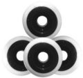

<table>
  <tr>
    <td rowspan="2"></td>
    <td style="font-weight:bold; background-color:#CCCCCC">Skateboard Wheels</td>
  </tr>
  <tr>
    <td>Although other materials have been used in the past, modern skateboard
      wheels are all manufactured out of urethane. Urethane skateboard wheels
      come in a variety of different sizes and hardnesses for varying terrain.
    </td>
  </tr>
</table>
